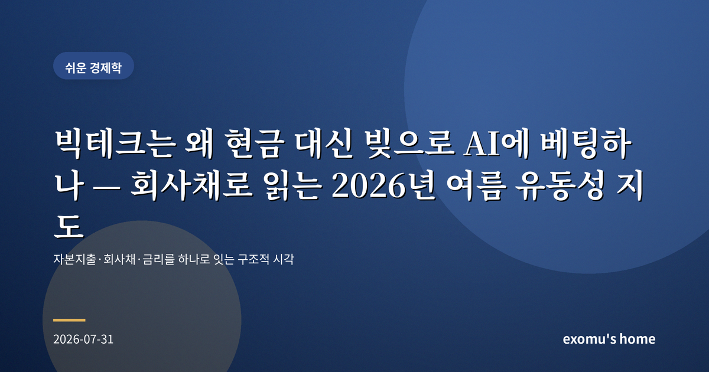
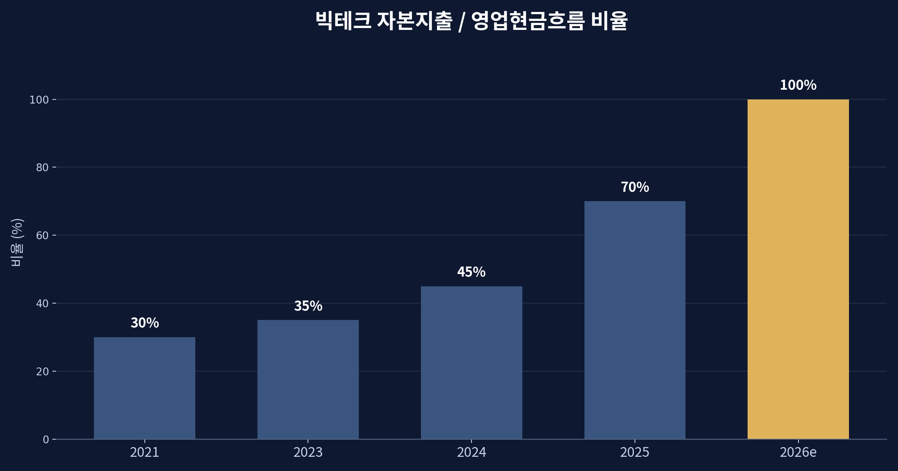
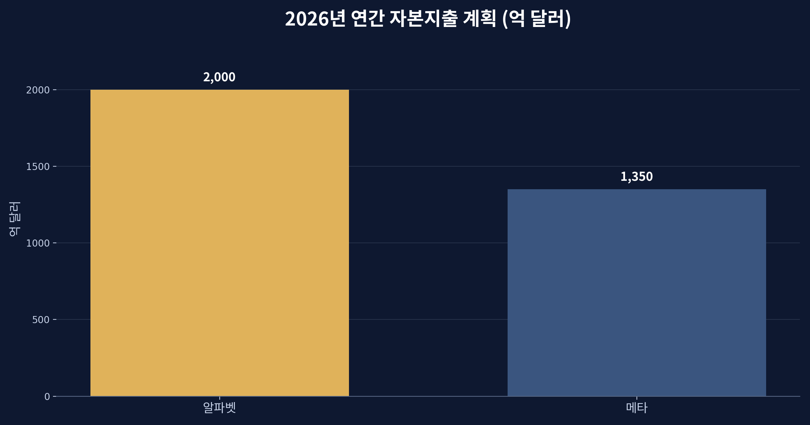
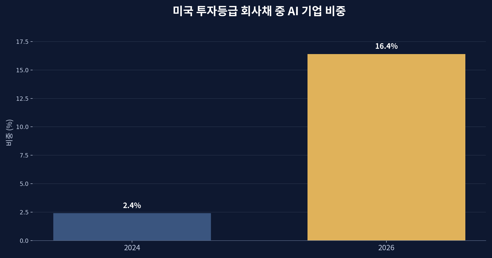
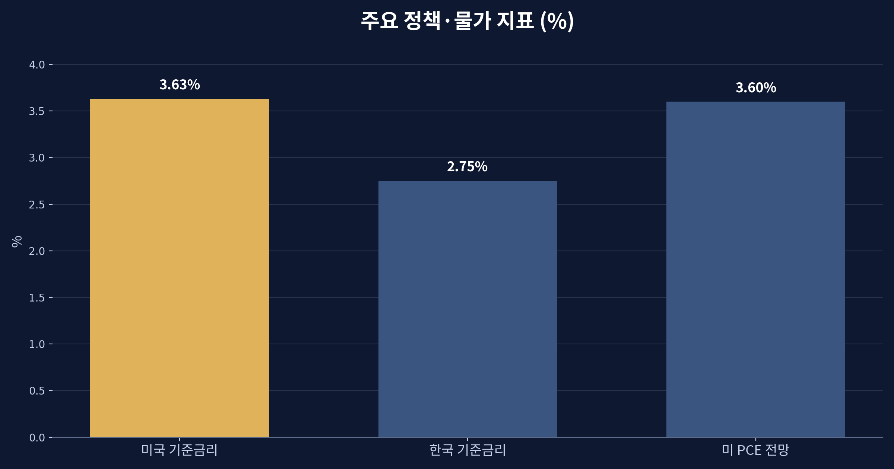

빅테크는 왜 현금 대신 빚으로 AI에 베팅하나 — 회사채로 읽는 2026년 여름 유동성 지도

현금이 넘치는 기업들이 빚을 내기 시작했다
2026년 여름, 미국 빅테크의 2분기 실적에서 가장 눈에 띈 것은 매출도 이익도 아니었다. 그들이 돈을 '어떻게 조달하는가'였다. 알파벳은 올해 자본지출 계획을 1,950억에서 2,050억 달러로 끌어올렸고, 2분기 잉여현금흐름은 마이너스 59억 달러를 기록했다. 세계에서 가장 현금이 많다는 회사가, 벌어들이는 것보다 더 많이 쓰기 시작한 것이다. 메타 역시 올해 투자 계획을 1,250억에서 1,450억 달러로 상향했다. 이 숫자들이 말하는 것은 단순한 낙관이 아니라, 자금 조달 방식의 근본적 변화다.

자본지출이 현금흐름을 삼키다
빅테크의 영업현금흐름 대비 자본지출 비율은 2021년까지만 해도 30% 안팎이었다. 번 돈의 3분의 1 정도를 설비에 쓴다는 뜻이다. 그런데 이 비율이 올해 70% 수준으로 치솟았고, 내년에는 100%에 이를 것이라는 전망까지 나온다. 벌어들이는 현금을 거의 전부 데이터센터와 AI 반도체에 쏟아붓는다는 의미다. 자체 현금만으로는 이 속도를 감당할 수 없게 되자, 기업들은 오랫동안 멀리했던 카드를 꺼냈다. 바로 회사채, 즉 빚이다.

회사채 시장에 스며든 AI
그 결과는 채권시장의 지형을 바꿔 놓았다. 미국 투자등급 회사채 시장에서 AI 관련 기업이 차지하는 비중은 2024년 2.4%에서 2026년 16.4%로 불어났다. 비금융 기업이 새로 발행하는 회사채의 4분의 1 이상이 AI와 연결돼 있다. 시장에 풀리는 채권의 성격이 통신·에너지 중심에서 AI 인프라 중심으로 빠르게 옮겨 가고 있는 것이다. 투자자 입장에서는 '안전한 우량채'를 산다고 믿었는데, 그 안에 이미 상당한 AI 베팅이 섞여 들어와 있는 셈이다.
이것이 왜 중요한가. 회사채 발행이 늘면 그만큼 시장의 자금을 빨아들인다. 거대 기업들이 대규모로 돈을 빌리면 채권 공급이 늘고, 이는 장기 금리에 위로 압력을 준다. AI 투자 열기가 단지 주식시장의 이야기가 아니라, 금리와 유동성 전체를 움직이는 힘이 되어 가는 이유다.

금리가 쉽게 내려오지 못하는 배경
여기에 거시 환경이 겹친다. 2026년 7월 현재 미국 기준금리는 3.50~3.75% 구간에 있고, 시장은 다음 회의에서의 인하 가능성을 사실상 닫아 두고 있다. 연준이 6월에 제시한 올해 근원물가(PCE) 전망은 3.6%로 오히려 상향됐다. 물가가 목표보다 높게 유지되는 한, 금리를 서둘러 내리기 어렵다. 한국은행 기준금리는 2.75%로 한미 금리 역전은 여전히 이어진다. 높은 금리와 늘어나는 회사채 발행이 만나면, 돈을 빌리는 비용은 쉽게 낮아지지 않는다.

개인은 이 지도를 어떻게 읽을까
이 모든 흐름은 한 장의 지도로 이어진다. AI 투자가 회사채 발행을 늘리고, 그것이 시장의 자금을 흡수해 장기 금리에 상승 압력을 주며, 다시 위험자산의 할인율을 끌어올린다. 그리고 이 사슬의 끝에는 우리의 예금 금리, 대출 이자, 주식 밸류에이션이 놓여 있다. 반도체 호조로 올해 1분기 한국 경제가 전년 대비 3.8% 성장했다는 소식도, 결국 이 거대한 AI 자본 흐름의 한 자락이다.
중요한 것은 특정 종목의 등락이 아니라 구조를 읽는 눈이다. 지금 세계의 돈은 'AI 인프라를 짓는 데 필요한 자금'을 중심으로 재편되고 있다. 그 자금이 빚으로 조달되는 한, 금리와 유동성은 이 투자의 성패에 점점 더 민감해질 것이다. 내 자산이 그 사슬의 어디에 연결돼 있는지 아는 것만으로도, 시장의 소음 속에서 방향을 잃지 않을 수 있다.